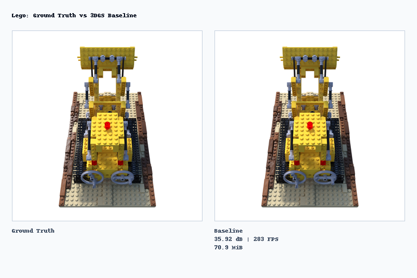
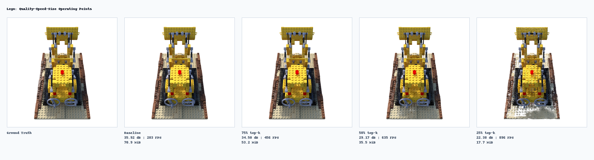
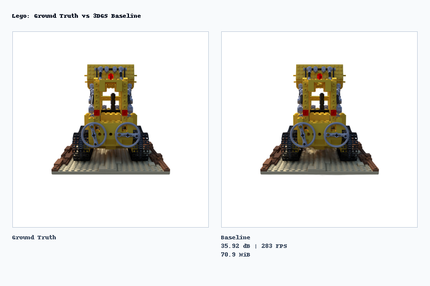
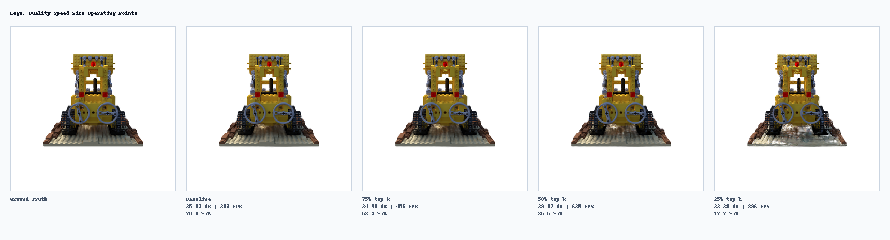

Pareto-Splat is a reproducible research pipeline for studying quality, speed, and model-size trade-offs in 3D Gaussian Splatting . It wraps a pinned GraphDeCo baseline with held-out evaluation, CUDA profiling, post-training Gaussian pruning, Pareto-front analysis, controlled robustness studies, and presentation tooling.
f(x) = [PSNR(x), FPS(x), -SizeMiB(x)]


